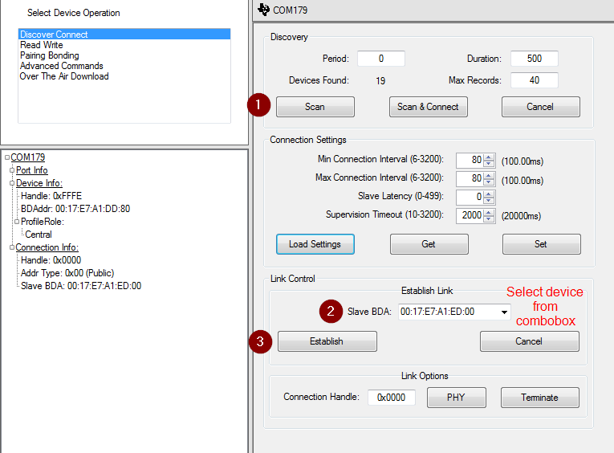
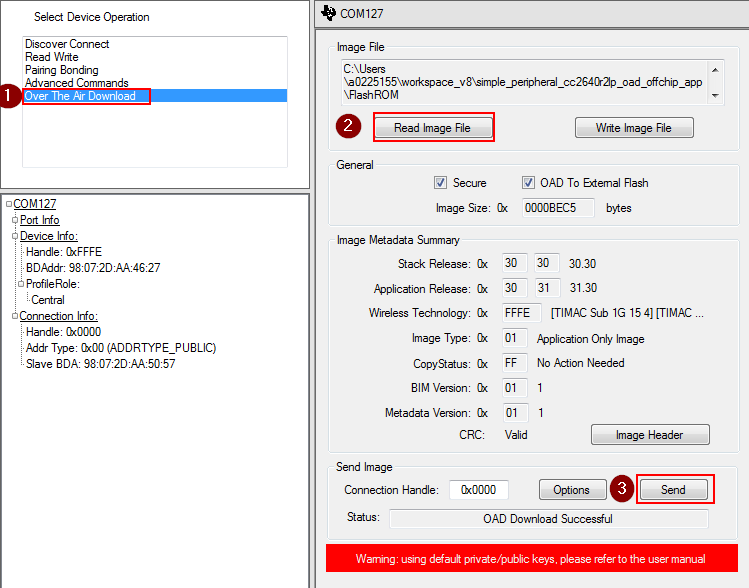
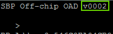

Performing a BLE OAD¶
This section will detail the steps required to perform an OAD over BLE using BTool. It assumes that the OAD Target and Distributor have been setup according to Setting up the BLE OAD Environment.
Warning
If the device is connected to an external debugger when performing an OAD, the device could potentially not reset properly after a successfull OAD. This is a known issue, however, simply unplugging/replugging or hard reset the device will make the device boot properly. Read more about this in detail in Section Halt In Boot (HIB).
Modifying the Image Version¶
Modifying the image version is a quick and easy way to verify that the OAD has completed. Some sample apps will display their image version in the terminal window.
Navigate to the
oad_image_header*.cfile in the SDK.Modify the
SOFTWARE_VERfield to increase the version numberRebuild the application project, and generate a new binary
*_oad.bin.- The oad_image_tool automatically runs as a post-build step
- The binary from the tool will be placed in the build folder alongside the
default
.outfile.
OAD using BTool¶
Run BTool using the
Run_BTool.batscript, this will initialize BTool to use the proper BLE-Stack version.Connect to the target device using its BLE address
- See steps in OAD Target Setup for steps to get target address
- Screen shot below shows how to connect to a specific BLE address in BTool
Wait for the application’s connection parameter update (if enabled)
BTool will send a connection parameter update at the beginning of an OAD to attempt a faster download. The embedded application will also attempt a parameter update. It is recommended to wait until the application’s connection parameter update has taken place before starting an OAD. If you are experiencing a slow OAD, this may be the cause. The parameter update is complete once the following message is shown in the BTool log:
-------------------------------------------------------------------- [7] : <Rx> - 04:16:04.518 -Type : 0x04 (Event) -EventCode : 0x00FF (HCI_LE_ExtEvent) -Data Length : 0x0B (11) bytes(s) Event : 0x0607 (1543) (GAP_LinkParamUpdate) Status : 0x00 (0) (SUCCESS) ConnHandle : 0x0000 (0) ConnInterval : 0x0024 (36) ConnLatency : 0x0000 (0) ConnTimeout : 0x00C8 (200) Dump(Rx): 0000:04 FF 0B 07 06 00 00 00 24 00 00 00 C8 00 ........$..... --------------------------------------------------------------------Once connected, switch to the OAD tab and load an oad image into BTool
- If using on-chip OAD, be sure to un-check the box “OAD to external flash”
- The OAD process has begin once the image identify is accepted.
- While intermittent blocks are being sent BTool will display:
Write Block Number = x of y- The OAD process will continue until BTool displays
OAD Download Successful.- The “secure” checkbox is read-only and indicates whether the currently loaded OAD image has security enabled in its header.
- For secure OAD configurations, BTool uses the default public/private key pair. To change the security keys used by the embedded device, see Generating New Security Keys (Embedded). To change the security keys used by BTool please see the next section of this chapter.
Warning
After the OAD procedure has completed, you may need to manually unplug/replug or hard reset the CC2640R2F LaunchPad in order to trigger a full reset and jump to BIM. This is a known issue, and is described in more detail in Section Halt In Boot (HIB).
- After some delay (copying in the BIM), the new image should boot up and will be active.
Assuming the steps in Modifying the Image Version were followed, then a new image version # should be be observed on the terminal display. If the version displayed on the terminal matches, then the download has has completed successfully.

Note
The OAD Image Tool will run as a post build step to build an OAD
enabled image. The output of the tool is a bin file with _oad.bin
appended to the name of the input hex file. This is the file to pass into
BTool.
BTool Image Header Dialog¶
A good way to inspect and parse the fields in the OAD Image Header, for a given image is to use BTool. In this view, BTool will parse the various fields in the image header and present them in a human readable format.
This can also be used to manually change various fields of the image header and then resign/recalculate the CRC. The image header dialog can be used to modify the image version number in order to simulate upgrading to a new version of the firmware via OAD.
When using secure OAD, any change in the image header will require the image to
be re-signed as well as CRC to be recalculated. Resigning the image requires
the key files to be placed in the same folder as BTool.exe.
Copy the public.pem and private.pem files from the
tools/blestack/oad folder into the same folder as btool.exe.
Note
It is important that the keys match the ones that are installed on the embedded device or the image signed by BTool will be rejected due to an invalid signature.
You can access the OAD Image Header dialog using the following steps:
- Start BTool normally
- Navigate to the “Over The Air Download” pane
- Select read image file, point this to the candidate image ending with _oad.bin
- Click the image header button